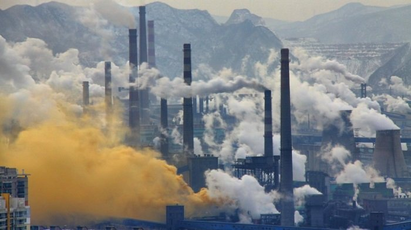

Un estudio de la Universidad de Chicago concluyó que la contaminación del aire es mucho más mortal que el tabaquismo y accidentes automovilísticos, siendo el carbón la causa principal del problema ¿Qué podemos hacer para mejorar nuestra calidad de vida?
Según un reciente informe de la Universidad de Chicago, la contaminación del aire está acortando nuestras vidas drásticamente. ¿Cuál es el factor externo que acorta más nuestras vidas? Según el informe la contaminación del aire está disminuyendo de 2 a 6 años la vida de miles de millones de personas. Esto la convierte en una causa de muerte mucho mayor que el tabaquismo, el alcohol y narcóticos, agua y saneamiento insalubre, accidentes de tránsito, VIH/SIDA y malaria.
La principal causa de la contaminación del aire es la quema de carbón, a lo que se ha sumado el aumento de los incendios por la crisis climática. Según Michael Greenstone, profesor de la Universidad de Chicago, la contaminación del aire “es la mayor amenaza externa para la salud humana y no se está reconociendo con la gravedad que debería”, y agregó que “hay gobiernos que están permitiendo que las personas tengan vidas mucho más cortas y enfermas”.
La India es el país más afectado por la contaminación del aire, ya que el ciudadano promedio muere 6 años antes. Por su parte, China ha reducido drásticamente la contaminación del aire en los últimos 7 años, pero el aire sucio todavía está recortando 2,6 años la vida útil de su pueblo.
La quema de combustibles fósiles está causando la contaminación del aire y la crisis climática, pero los países tienen mucho más poder para cortar el aire contaminado dentro de sus propias fronteras. A los problemas del cambio climático, ahora también se está sumando a la contaminación del aire al provocar incendios forestales, completando un círculo vicioso.
Subtitulo
La reducción de la contaminación del aire comienza desde nuestras acciones. Según Greenstone: “no sólo permitimos que suceda, en realidad lo estamos causando. Lo más sorprendente es que hay países grandes donde, efectivamente, una combinación de normas gubernamentales y sociales están eligiendo permitir que las personas vivan vidas realmente dramáticamente más cortas y más enfermas”, y agregó que cambiar a energía más limpia y hacer cumplir las medidas de calidad del aire en las centrales eléctricas existentes ha reducido la contaminación en muchos países.

Según la Organización Mundial de la Salud (OMS), la contaminación del aire causa aproximadamente 7 millones de muertes prematuras y resulta en la pérdida de millones de años más sanos de vida. Las fuentes de la contaminación del aire incluyen: industrias y suministro de energía, transporte, prácticas agrícolas y gestión de residuos.
Las directrices mundiales de calidad del aire de la OMS proporcionan pruebas claras del daño que la contaminación del aire inflige a la salud y recomienda niveles de calidad del aire para proteger la salud y salvar vidas alrededor del mundo.
La reducción de la contaminación del aire se vería reflejado directamente en nuestra calidad de vida reduciendo los accidentes cerebrovasculares, enfermedades del corazón, cáncer de pulmón, neumonía y asma.
Reduciendo la contaminación del aire combatimos el cambio climático y mejoramos nuestra calidad de vida. Para esto, la OMS recomienda invertir en energías renovables, reciclar, trasladarse en bicicleta, reducir la incineración de residuos de la agroindustria, así como también los incendios forestales y la tala indiscriminada de árboles.